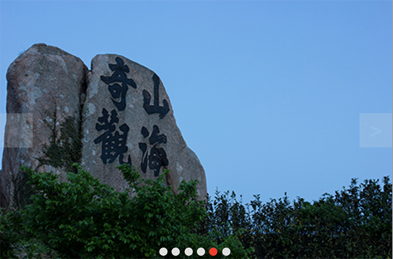
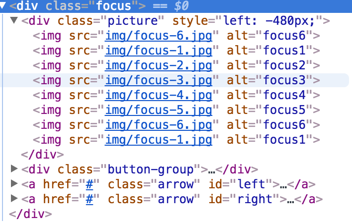
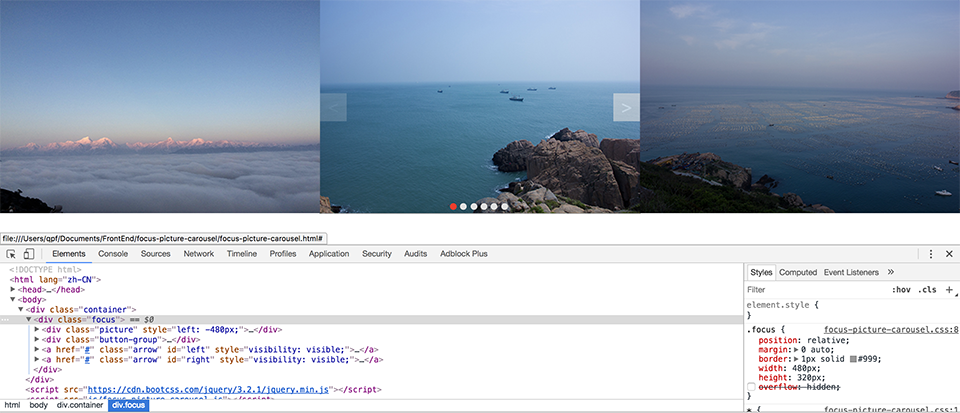

在许多电商网站或者门户网站首页，都会有焦点图，并且能够在一定时间进行自动切换， 大家比较熟悉的就是京东和淘宝
接下来就自己动手来实现一下这种焦点图
要实现的效果：
最终效果图如下所示：
首先需要一个展示图片的盒子div.focus，这个盒子的宽度和高度应该和每一张图片大小一致 这个盒子，同时要将overflow设置为hidden。放图片的div宽度为所有图片的总宽度，通过 改变盒子的left属性来实现图片的切换。由于在点击到最后一张图片后再点下一张要跳转到 第一张从而实现无限滚动的效果，所以分别在一头一尾放置第6张图片和第1张图片。
 可以看到如果将div.focues的overflow属性注释掉后，图片是平铺在整个页面上的
由于需要改变图片的left属性，所以应该将其position属性设置为absolute。左右翻页的按钮 在鼠标移动到上面时，改变它的透明度为0.6
按照文章开头所要实现的效果，先来实现点击左右翻页按钮实现图片切换。
一张图片的宽度是480px，所以在点击右侧箭头的时候应该将图片向左移动480px，也就是left 属性要减少480px，点击左侧箭头向右移动480px。需要注意的是，当left值大于-480px时， 需要将它重置为-2880px（跳到最后一张图片），当left值小于-2880px时，需要将它重置为 -480px（跳到第一张图片），这样便可以实现无线循环。给两个按钮添加一个点击事件，每次 点击执行一次move函数。
/**
* 这个函数用于移动图片，接收一个移动参数
* @param dis为需要移动的距离
*/
function move(dis){
let $picture = $(".picture");
let left = parseInt($picture.css("left"));
left += dis;
$picture.animate({left:left},400,"linear",function(){
if(left > -480){
left = -2880;
}
if(left < -2880){
left = -480;
}
$picture.css("left",left + "px");
moving = false;
});
}
接下来是下方的切换按钮，该按钮的功能是点击时会自动切换到对应的图片上面，同时被点击的 按钮还会有一个被点亮的效果。
/**
* 这个函数是用于点亮下方的几个小按钮的
*/
function activeBtn(){
if(index < 1){
index = 6;
}
if(index > 6){
index = 1;
}
let $cur_active = $(".button-group").find(".active");
if($cur_active.attr("index") !== index){
$cur_active.removeClass("active");
$(".button-group").find('[index=' + index +']').addClass("active");
}
}
最后就是自动轮播的函数编写，这个函数就是定时执行上面两个函数就好了
/**
* 实现焦点图自动轮播
*/
function autoMove(){
index += 1;
activeBtn();
move(-480);
timeoutId = setTimeout(autoMove,5000);
}
其他关于事件绑定的代码
let index = 1;//当前为第几张图片
let timeoutId;
timeoutId = setTimeout(autoMove,5000);
//为左右翻页添加点击事件
$("#left").click(function(event){
event.preventDefault();
if(!moving){
index -= 1;
activeBtn();
move(480);
}
});
$("#right").click(function(event){
event.preventDefault();
if(!moving){
index += 1;
activeBtn();
move(-480);
}
});
//为下方按钮添加点击事件
$(".button-group").click(function(event){
let $target = $(event.target);
if($target.is("span")){
if(!moving){
let cur_index = parseInt($(this).find(".active").attr("index"));
index = parseInt($target.attr("index"));
activeBtn();
move(-480 * (index - cur_index));
}
}
});
$(".focus").mouseenter(function(event){
$(".arrow").css("visibility","visible");
clearTimeout(timeoutId);//取消自动轮播
})
.mouseleave(function(event){
$(".arrow").css("visibility","hidden");
timeoutId = setTimeout(autoMove,5000);//重新设置自动轮播
});
一些需要特别注意的地方：